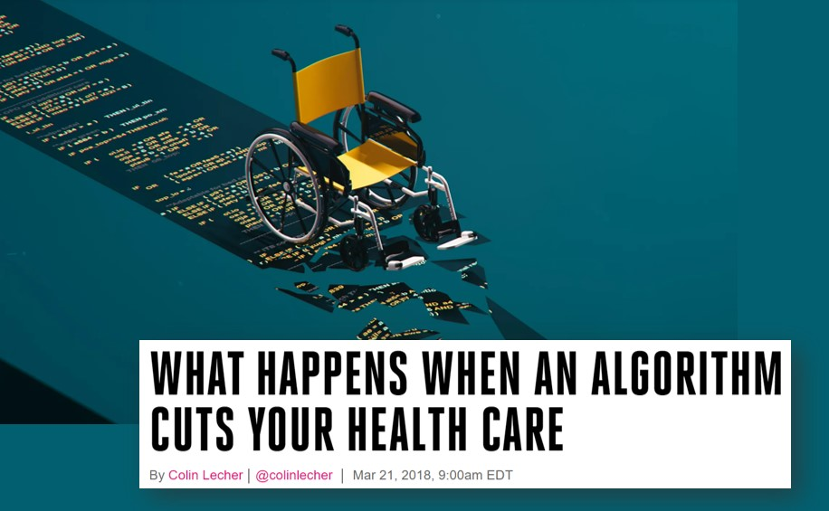
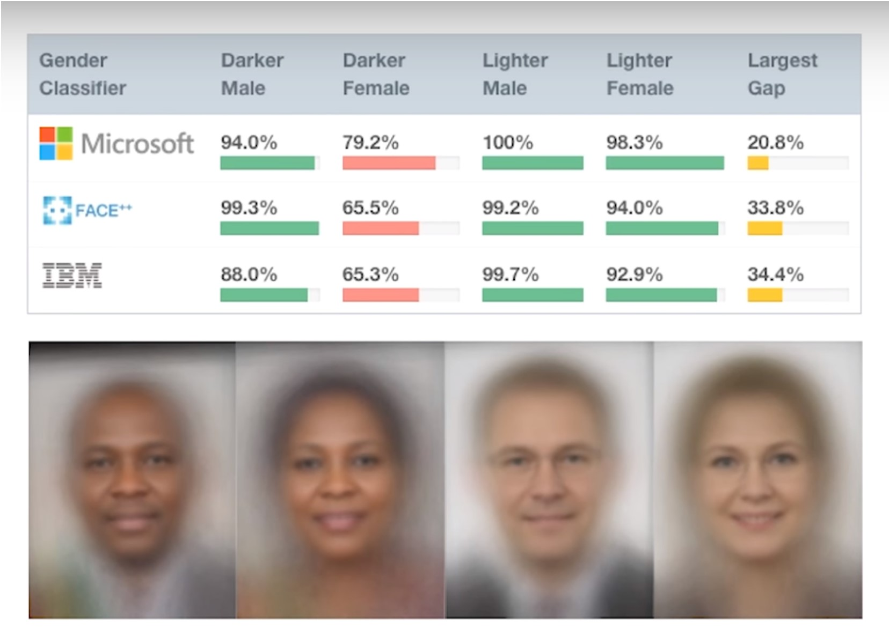
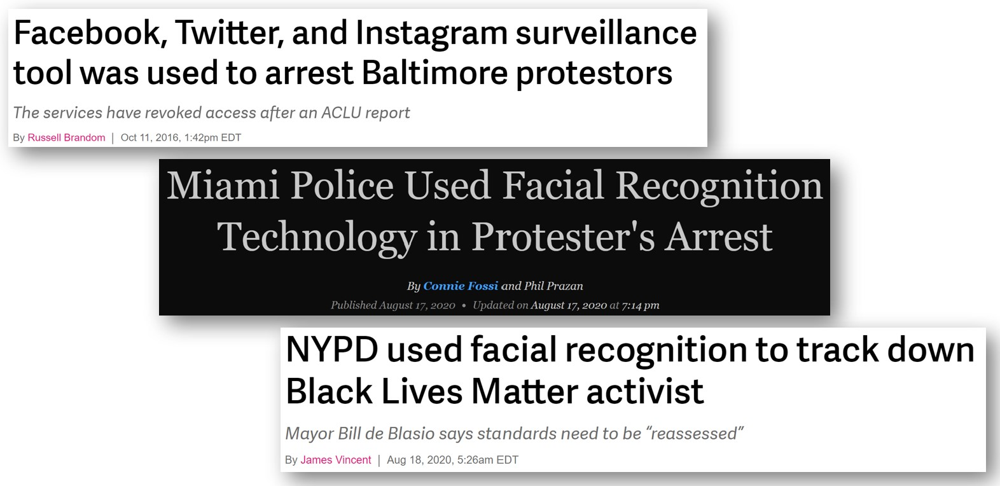
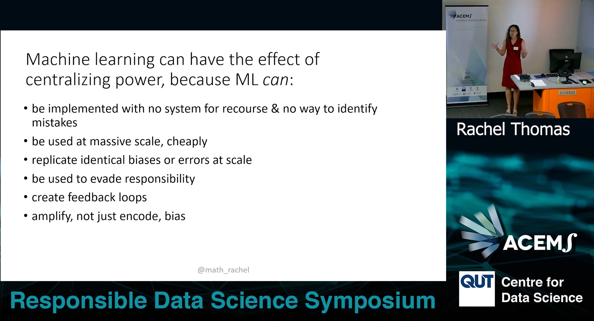
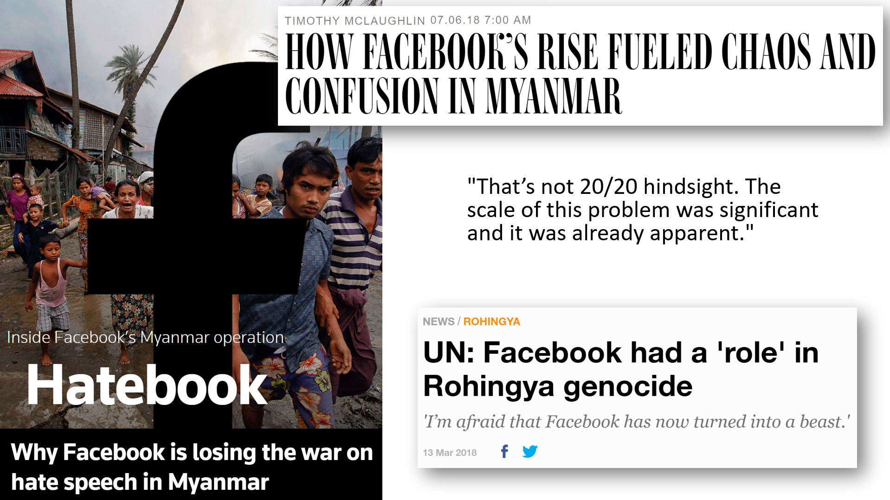
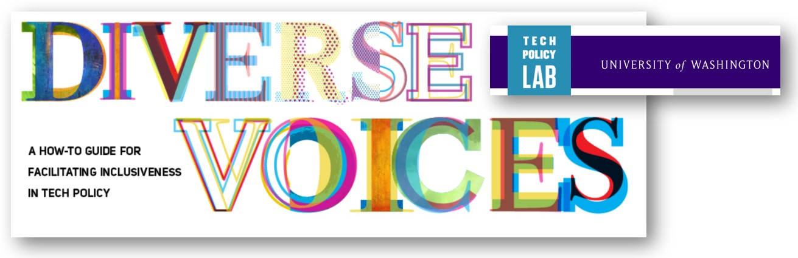
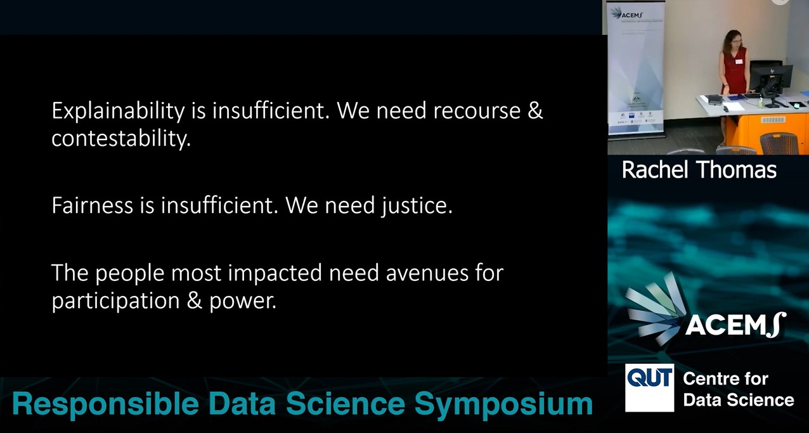

Friends with no previous interest in AI ethics have begun asking me questions in the wake of the release of ChatGPT4, Bard, and Bing Chat. This new generation of large language models has made headlines and sparked widespread debate. To consider the risks posed by new AI applications, it is useful to first understand several underlying concepts. I spent years researching the mechanisms by which algorithmic systems can cause harm, and in late 2021, I gave a 20-minute talk on what I consider key ideas at the heart of AI ethics. With the advent of the newest generation of language models, these concepts are more relevant than ever.
Over the past decade, topics such as explainability (having computers generate an explanation of why they compute the outputs they do) and fairness/bias (addressing when algorithms have worse accuracy on some groups of people than others) have gained more attention within the field of AI and in the media. Some computer scientists and journalists have stopped there: assuming that a computer program that can explain the logic behind its decision making, or a program that has the same accuracy on light-skinned men as on dark-skinned women, must now be ethical. While these principles are important, on their own they are not enough to address nor prevent harms of AI systems.
Below is an edited transcript of this talk.
Actionable Recourse
Explainability on its own is insufficient. Consider an algorithmic system that is making decisions about whether or not someone should get a loan. Often a question will be “why was my loan denied?”, but really the underlying question is “what can I change about my situation to get a loan in the future?”
An explanation should be actionable. For example, it’s not okay to deny a loan because of ethnicity. That’s discrimination and it would not make for a satisfying explanation. For decisions impacting people’s lives, there also needs to be a mechanism for recourse, so that decisions can be changed. This is actionable recourse, as described by Berk Ustun.
This underlying idea of actionable recourse shows up in many applications. There is an example I return to often, since it’s a pattern that we see across many countries. In the USA there is an algorithm to determine poor people’s health care benefits. When it was implemented in one state there was a bug in the code that incorrectly cut care for people with cerebral palsy. Tammy Dobbs was one of the many people that lost care due to a software bug. She needed this care for very basic life functions: to help her get out of bed in the morning, to get her breakfast, and so on. She asked for an explanation and they didn’t give her one; they just said this is what the algorithm determined. At the root, what she needed was not just an explanation, but a mechanism for recourse to get the decision changed. Eventually the error was revealed through a lengthy court case, but that is a terrible setup.

This illustrates a common issue that shows up again and again: automated systems are often implemented with no way to identify and address mistakes.
There are a few reasons why there is no mechanism for catching mistakes. Often automation is being used as a cost cutting measure and having robust error checking in place and ways to surface mistakes would cost more. There can also be biases of people mistakenly believing that computers are perfectly accurate.
Human Rights Watch put out a report on automated system use in the EU for social benefits. Country after country had alarming examples where there were errors, yet no clear way to identify, much less address, them. There was a case in France where an algorithm to determine food benefits made errors in at least 60,000 cases. One woman said her case manager even agreed this was a bug and that she deserved to receive benefits, but the case manager didn’t have the power to reinstate them!
Another domain to consider is content moderation. The Santa Clara Principles for content moderation were developed by a group of ethicists, although these principles are not observed by the major platforms. I want to share Principle 3, because I love the wording, which is that companies should provide a meaningful opportunity for timely appeal. I really like this idea of appeal being meaningful and timely. I think this is relevant far, far beyond content moderation. Too often, even when there is a way to try to report a mistake, you just get an automated response that clearly hasn’t been read or you have to wait months for an answer. It is important that appeals are not just available, but also that they are meaningful and timely.
Contestability
Contestability is the idea of building an algorithmic system to include mechanisms for questioning and disagreeing with results as part of the system, rather than as an external add-on. Too often we build computational systems assuming okay this is going to work great, and then when there are errors, we tack on something extra at the end. I found this provocative to think about how we include disagreement into the core of the system.
I had considered this from a slightly different angle in my work with fast.ai, where we have a concept of what we call augmented machine learning. This is in contrast to auto machine learning, which is often about automating a process end to end. With augmented machine learning we really wanted to think about what are the things that humans are really good at and how can we take advantage of human strengths as opposed to simply trying to automate everything and then being left with weird gaps of stuff that computers are not doing well. How can humans and computers best work together? This is important to keep in mind with system design.
Fairness and Bias
It is important to consider fairness and bias, but that alone is insufficient. I imagine many of you are familiar with the Gender Shades research on facial recognition by Joy Boulamwini, Timnit Gebru, and Deborah Raji. They evaluated commercial computer vision products that had been released from a number of big name companies including Microsoft, IBM, and Amazon. They found that the products performed worse on women than on men and worse on people with dark skin than on people with light skin, leading to terrible results for dark-skinned women. For instance, IBM’s product had 99.7% accuracy on light skinned men, but just 65% accuracy on dark-skinned women. That is a huge discrepancy in a product that had been commercially released. This research was ground-breaking in bringing attention to a pernicious issue.

Some people have reacted with a superficial response, which is not consistent what the researchers wrote, concluding that the solution is solely to get more pictures of dark-skinned women and then call it a day. While issues of representation in underlying training datasets need to be addressed, this is only one part of the problem. We have to look at how these systems are used, which poses many other significant harms.
Harmful if it doesn’t work; Harmful if it works
In several USA cities, police have used facial recognition to identify Black people protesting police racism and police murders of unarmed civilians. There’s a huge power issue when you look at this type of use of technology. I believe this is unethical whether or not it works. It is certainly terrible to misidentify people and arrest the wrong person, but it’s a threat to civil rights to identify protesters.

Dr. Timnit Gebru wrote, “A lot of times, people are talking about bias in the sense of equalizing performance across groups. They’re not thinking about the underlying foundation, whether a task should exist in the first place, who creates it, who will deploy it on which population, who owns the data, and how is it used?” These are all crucial questions to ask. They are questions of power. Yes, you should check the error rates on different subgroups, but that alone is insufficient, and doesn’t address questions of power.
While the policing examples are from the USA, this is a pattern throughout history and throughout the world. Professor Alvaro Bedoya wrote, “It is a pattern throughout history that surveillance is used against those considered ‘less than’, against the poor man, the person of color, the immigrant, the heretic. It is used to try to stop marginalized people from achieving power.” The history of surveillance as a weapon used against the marginalised stretches back centuries and predates computers, but AI has now turbocharged this dynamic.
Operating at scale
Robodebt was a program where the Australian government created unlawful debts for hundreds of thousands of people through an automated system. People would be notified that they had been overpaid on welfare (often, this was false, but contesting it required documentation most people didn’t have) and that they now owed the government significant amounts of money. This destroyed many lives, even driving some victims to suicide. A detail that struck me is that the number of debts issued went from 20,000 per year, back when it was a more manual process, to 20,000 per week with automation. That is a 50x scale up! Automation was used to drastically scale putting poor people into debt. This is another disturbing pattern in machine learning.
Centralizing Power
Machine learning often has the effect of centralizing power. It can be implemented with no system for recourse and no way to identify mistakes, as we saw earlier with people whose healthcare was wrongly cut due to a bug. It can be used cheaply at massive scale, as shown with Robodebt. It can also replicate identical biases or errors at scale.
Often when I teach about how automated systems can cause harm, people will point out how humans make mistakes and are biased too. However, there are key differences in automated systems. It is not just plug-and-play interchangeable when you switch from a human decision maker to an automated decision maker.
Automated systems can also be used to evade responsibility. This is true of bureaucracy in general. While in non-automated bureaucracies you also get a passing of the buck (“I was just following orders” or ”it’s this other person’s fault”); however, as dana boyd has pointed out, automated systems are often being used to extend bureaucracy (as explained by danah boyd), adding additional places to deflect responsibility.
In the example health care software bug example that I shared, a journalist interviewed the creator of that algorithm. He is earning royalties through a private company, and he said it’s not the company’s responsibility to offer an explanation. He blamed policymakers for the errors. The policymakers could blame the particular people that implemented this software. Everyone can point to somebody else or even to the software itself. Systems where nobody takes responsibility do not lead to good outcomes.
Feedback loops
Feedback loops occur when you create the outcome that you were trying to predict. Data can become tainted from the output of the model. Furthermore, machine learning models can amplify bias, not just encode it. There have been multiple papers showing that if you start with a biased dataset you can actually train a model that is even more biased than the training dataset.

In summary, these are several reasons why machine learning can end up centralising power and why automated systems are different from human decision makers. AI researcher Pratyusha Kalluri advises us that rather than ask whether an AI application is fair to instead ask how it shifts power.
The People Impacted
Another thing I want to highlight about the healthcare example is that the people whose healthcare was incorrectly cut saw the problem right away, but there was no way to get that mistake acknowledged or addressed.
Another tragic example of people recognizing an issue but not being able to get it addressed is Facebook’s role in the genocide in Myanmar. In 2018, the UN found that Facebook had played a “determining role” in the genocide; however that was not not a surprise to anyone who had been following the events. A tech entepreneur based in Myanmar said, “That’s not 20/20 hindsight. The scale of this problem was significant. It was already apparent [going back to 2013].”

It’s important to understand that genocide does not come out of nowhere. It gradually escalates. From 2013, people warned executives about how Facebook was being used in Myanmar to incite violence and to dehumanize an ethnic minority. In 2013, 2014, and 2015, people raised warnings and they were not listened to.
An indication of how little Facebook did to address the issues is that the start of 2015 they only had two contractors who spoke Burmese, and they only hired 2 more that year. Compared to the number of Burmese-speaking users in Myanmar, it was a tiny number. Facebook invested very few resources in this (contrast the situation with when Facebook rapidly hired over a thousand content moderators in Germany to avoid a fine).
This is a pattern that we see over and over, that often the people most impacted by a system recognize the issues earliest, but they are not listened to and don’t have effective ways to raise an alarm. They also best understand the needed interventions for addressing the ethical risk. It is crucial that the people most impacted have avenues for participation and power.
Practical Resources
The participatory approaches to machine learning workshop at ICML 2020 was fantastic. The organizers of the workshop highlighted that the designers of a machine learning system have far more power over the system than the individuals impacted. Even within algorithmic fairness or human-centered ML, ethics work is often focused on centralized solutions, which can further increase the power of system creators. The workshop organizers called for more democratic, cooperative, and participatory approaches.
I want to share some practical resources with you. The Markkula Center for Applied Ethics at Santa Clara University has a packet of resources online for ethics and technology practice and in particular I love their Tech Ethics Toolkit. This is a set of practices that you could implement within your organization. As an example, tool 3 is “expanding the ethical circle”, which involves setting a regular time aside to make sure you are going through who all the stakeholders are that will be directly affected by a system, as well as who will be indirectly affected in significant ways. It involves asking whose skills, experiences, and values have we simply assumed rather than actually consulted. The toolkit goes into more detail about this on questions to ask and things to look for.

Another useful resource on this is the Diverse Voices guide from the University of Washington Tech Policy Lab. In addition to an academic paper, they have a practical how-to guide on assembling panels of groups who are not be well-represented and whose input you need. They include examples, such as panels of people who are formerly incarcerated, people who don’t drive cars, and extremely low income people.
Data are not bricks to be stacked, oil to be drilled
In conclusion, explainability on its own is insufficient; we need actionable recourse and contestability. Fairness is insufficient; we need justice. The people most impacted by a system need avenues for participation and power.

These are very difficult problems but some steps towards solutions are:
- making sure you have ways to identify, report, and address errors quickly
- offering timely meaningful appeals
- include consultation with voices that are often overlooked (and not just in a tokenistic way
- designing products processes processes and technology with contestability in mind
- diversity in hiring retention and promotions (diversity including nationality and language)
I’ll close with a quote that I love from AI researcher Inioluwa Deborah Raji, “But data are not bricks to be stacked, oil to be drilled, gold to be mined, opportunities to be harvested. Data are humans to be seen, maybe loved, hopefully taken care of.”
The video version of my talk is available here.
Further reading / watching
You may also be intersted in:
- The New Era in NLP | SciPy 2019 | Rachel Thomas: keynote talk I gave at SciPy 2019, just after the release of GPT-2, about the technical advances and ethical risks of language models
- 11 Short Videos About AI Ethics: short videos about machine learning ethics, which I created for the fast.ai deep learning course
- Reliance on metrics is a fundamental challenge for AI: academic paper David Uminsky and I wrote about how AI is perhaps too good at optimizing metrics, and the problems this can create
I look forward to reading your responses. Create a free GitHub account to comment below.